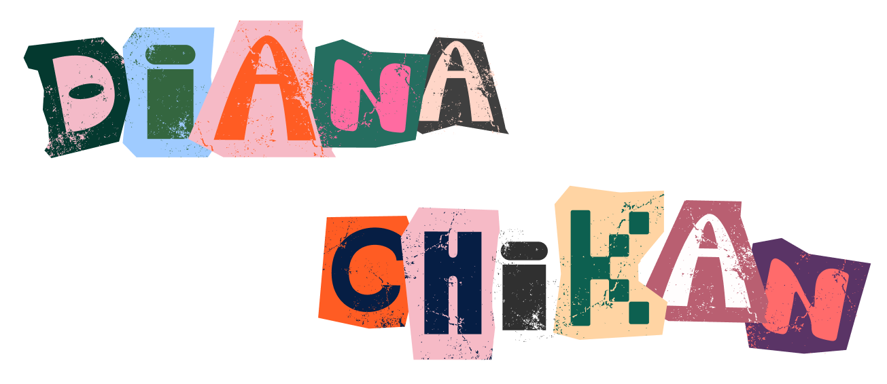

Моделирование и цифровые двойники
Продуктовый дизайнер. Исследования, рабочие инструкции и инструменты планирования для производственных команд.

нахожу главное и продумываю до мелочей
Продуктовый дизайнер. Исследования, рабочие инструкции и инструменты планирования для производственных команд.
Продуктовый дизайнер. Онбординг, анкеты стартапов и личные кабинеты для основателей и инвесторов.
Вместе с основателями проектировала первые версии потребительских продуктов.